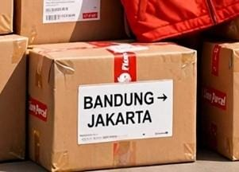

Kirim Paket Bandung-Jakarta 1 Hari Sampai? Ini yang Perlu Diketahui

Sedang mencari jasa kirim paket Bandung-Jakarta 1 hari sampai? Pengiriman cepat menjadi kebutuhan banyak orang, mulai dari pemilik toko online, pelaku UMKM, perusahaan, hingga masyarakat yang perlu mengirim dokumen atau barang kepada keluarga dan rekan bisnis.
Bandung dan Jakarta merupakan dua wilayah dengan aktivitas perdagangan dan bisnis yang tinggi. Karena itu, kebutuhan pengiriman antara kedua kota ini cukup beragam, mulai dari paket kecil, dokumen penting, produk jualan, hingga komponen dan perlengkapan usaha.
Namun, apakah semua paket dari Bandung ke Jakarta bisa sampai dalam satu hari? Jawabannya bergantung pada layanan yang tersedia, waktu paket diterima oleh ekspedisi, alamat tujuan, proses operasional, dan kondisi pengiriman. Oleh sebab itu, penting untuk memeriksa estimasi resmi sebelum memilih layanan.
Butuh Informasi Pengiriman Bandung-Jakarta?
Hubungi Lion Parcel Bandung POS101 untuk menanyakan pilihan layanan, tarif, dan estimasi pengiriman yang tersedia untuk paket Anda.
💬 Tanya Pengiriman via WhatsApp1. Apakah Paket Bandung-Jakarta Bisa Sampai dalam 1 Hari?
Pengiriman dari Bandung ke Jakarta dapat memiliki estimasi waktu yang berbeda sesuai jenis layanan yang dipilih. Layanan dengan estimasi lebih cepat mungkin tersedia pada rute dan kondisi tertentu, tetapi ketersediaannya harus diperiksa terlebih dahulu.
Sebelum memilih layanan pengiriman satu hari, pastikan beberapa hal berikut:
- Jenis layanan: Periksa apakah tersedia layanan dengan estimasi satu hari untuk rute dan jenis kiriman Anda.
- Waktu penyerahan: Perhatikan batas waktu penerimaan paket agar dapat diproses sesuai jadwal layanan.
- Alamat tujuan: Lokasi penerima dan cakupan layanan dapat memengaruhi estimasi waktu.
- Jenis barang: Barang tertentu memerlukan pemeriksaan atau penanganan tambahan.
- Hari operasional: Jadwal pemrosesan dan pengantaran dapat berbeda menurut layanan dan lokasi.
Jangan hanya berpatokan pada jarak Bandung-Jakarta. Untuk mengetahui kemungkinan paket sampai keesokan hari, gunakan informasi rute, jenis layanan, dan estimasi resmi yang berlaku ketika paket akan dikirim.
2. Jenis Barang yang Bisa Ditanyakan untuk Pengiriman Bandung-Jakarta
Kebutuhan pengiriman antara Bandung dan Jakarta bukan hanya paket belanja online. Berbagai jenis barang dapat memerlukan jasa ekspedisi, selama isi kiriman memenuhi ketentuan dan diterima oleh layanan yang dipilih.
Paket pribadi dan kebutuhan keluarga
Pakaian, aksesori, perlengkapan rumah tangga, dan barang pribadi lainnya dapat menjadi kiriman untuk keluarga atau teman. Pastikan barang dikemas dengan baik dan tidak termasuk barang yang dilarang.
Dokumen dan berkas usaha
Dokumen administrasi, berkas perusahaan, dan surat tertentu mungkin perlu dikirim dari Bandung ke Jakarta. Gunakan kemasan yang melindungi dokumen dari air, lipatan, dan kerusakan. Jika dokumen sangat penting, tanyakan layanan yang sesuai serta pilihan perlindungan yang tersedia.
Barang toko online dan UMKM
Penjual online dapat memerlukan pengiriman produk seperti pakaian, aksesori, kerajinan, atau barang dagangan lain kepada pelanggan di Jakarta. Sebelum mengirim, pastikan berat, ukuran, dan alamat penerima sudah benar.
Spare part dan perlengkapan usaha
Komponen mesin, suku cadang, alat kerja, dan perlengkapan usaha tertentu juga dapat membutuhkan pengiriman antarkota. Sampaikan jenis barang, bahan, ukuran, serta beratnya kepada petugas agar penerimaan dan layanan yang sesuai dapat diperiksa.
Perlu diingat, tidak semua barang dapat dikirim melalui layanan paket reguler. Barang berukuran besar, sangat berat, mudah terbakar, mengandung bahan berbahaya, atau membutuhkan penanganan khusus harus dikonfirmasi terlebih dahulu.
3. Cara Mengecek Ongkir Bandung ke Jakarta
Tarif pengiriman Bandung-Jakarta tidak selalu sama untuk setiap paket. Biaya dapat dipengaruhi oleh berat, dimensi, jenis layanan, alamat tujuan, serta ketentuan penghitungan berat yang berlaku.
Agar pengecekan ongkir lebih mudah, siapkan informasi berikut:
- Kota atau kode pos asal dan tujuan.
- Jenis barang yang akan dikirim.
- Berat paket setelah dikemas.
- Panjang, lebar, dan tinggi paket.
- Kebutuhan estimasi waktu pengiriman.
Setelah itu, cek tarif melalui kanal resmi Lion Parcel atau tanyakan kepada agen. Pastikan tarif dan estimasi yang diperoleh sesuai dengan layanan yang benar-benar tersedia untuk rute tersebut.
Cek Tarif Pengiriman Bandung-Jakarta
Sampaikan tujuan, berat, ukuran, dan jenis barang agar petugas dapat membantu memeriksa tarif serta pilihan layanan yang sesuai.
💬 Tanya Ongkir Sekarang4. Tips Agar Pengiriman Lebih Cepat dan Lancar
Jika barang perlu tiba di Jakarta secepat mungkin, persiapan sebelum mengirim sangat membantu mengurangi kendala yang dapat dihindari.
- Kemas barang sejak awal: Gunakan kemasan yang sesuai agar paket siap diperiksa dan diproses.
- Tulis alamat lengkap: Sertakan nama penerima, nomor telepon, alamat, dan kode pos jika tersedia.
- Periksa jam penerimaan: Tanyakan batas waktu penyerahan paket untuk layanan yang dipilih.
- Pilih layanan berdasarkan estimasi: Jangan menganggap semua layanan memiliki waktu tempuh yang sama.
- Pastikan isi paket sesuai ketentuan: Informasikan barang secara jujur dan tanyakan jika ada persyaratan khusus.
- Simpan nomor resi: Gunakan nomor resi untuk memantau status pengiriman.
Jika paket harus diterima pada tanggal tertentu, sampaikan kebutuhan tersebut sebelum membayar pengiriman. Mintalah konfirmasi mengenai estimasi dan ketentuan layanan, tetapi tetap pertimbangkan kemungkinan kendala operasional di luar perkiraan.
5. Pengiriman Bandung-Jakarta untuk Penjual Online
Bagi penjual online, kecepatan pengiriman dapat memengaruhi pengalaman pelanggan. Pesanan yang dikemas dengan rapi, alamat yang benar, dan pilihan layanan yang sesuai membantu proses pemenuhan pesanan berjalan lebih teratur.
Jika Anda memiliki toko online atau usaha rumahan di Bandung, perhatikan beberapa hal berikut:
- Sesuaikan jadwal pengemasan dengan batas waktu penerimaan paket.
- Pastikan stok barang tersedia sebelum membuat janji pengiriman kepada pembeli.
- Berikan informasi estimasi yang realistis kepada pelanggan.
- Simpan resi dan bukti pengiriman untuk keperluan administrasi.
- Evaluasi biaya pengiriman agar sesuai dengan harga jual dan margin usaha.
Untuk pengiriman rutin dalam jumlah banyak, tanyakan apakah tersedia pilihan layanan atau prosedur pengiriman yang sesuai bagi usaha Anda. Ketersediaan dan persyaratannya perlu dikonfirmasi kepada penyedia layanan.
6. Pengiriman Spare Part dan Barang Industri dari Bandung
Selain paket konsumen, pengiriman Bandung-Jakarta juga dapat dibutuhkan oleh bengkel, perusahaan, distributor, dan pelaku industri. Contohnya adalah komponen mesin, perlengkapan teknis, suku cadang, serta barang pendukung operasional.
Untuk barang seperti ini, jangan hanya mempertimbangkan kecepatan. Periksa pula ukuran, berat, keamanan kemasan, nilai barang, dan ketentuan penerimaan. Beberapa komponen mungkin memiliki batasan khusus, misalnya jika mengandung cairan, baterai tertentu, bahan kimia, atau material berbahaya.
Jika ukuran atau berat barang tidak sesuai dengan layanan paket biasa, tanyakan pilihan layanan lain yang tersedia. Untuk kebutuhan pengiriman industri, informasi barang yang lengkap akan membantu menentukan cara pengiriman yang lebih tepat.
7. Kirim Barang dari Bandung ke Jakarta dan Wilayah Sekitarnya
Istilah pengiriman Bandung-Jakarta dapat mencakup berbagai alamat tujuan. Penerima bisa berada di Jakarta Pusat, Jakarta Barat, Jakarta Timur, Jakarta Selatan, Jakarta Utara, maupun wilayah sekitar seperti Bekasi, Tangerang, Depok, dan Bogor.
Meskipun jaraknya berdekatan, estimasi waktu dan biaya pengiriman tidak selalu sama. Cakupan layanan, kode pos, jenis layanan, serta proses pengantaran ke alamat penerima perlu diperiksa.
Saat mengecek ongkir, masukkan alamat atau kode pos tujuan yang tepat. Jangan menggunakan estimasi satu wilayah untuk memastikan waktu pengiriman ke wilayah lain.
8. Cara Mengirim Paket dari Rancaekek ke Jakarta
Bagi masyarakat Rancaekek dan sekitarnya yang ingin mengirim paket ke Jakarta, langkah awalnya adalah memastikan jenis barang diterima dan menentukan layanan yang sesuai.
- Siapkan barang dan kemas dengan aman.
- Catat berat serta ukuran paket.
- Pastikan alamat dan nomor telepon penerima benar.
- Tanyakan tarif serta estimasi pengiriman kepada agen.
- Pastikan apakah tersedia layanan dengan estimasi satu hari untuk rute tersebut.
- Setelah paket diterima, simpan bukti transaksi dan nomor resi.
Jika Anda berada di kawasan Rancaekek, Nanjungmekar, atau Cicalengka, Anda dapat menghubungi Lion Parcel Bandung POS101 untuk menanyakan informasi layanan pengiriman yang tersedia. Konfirmasikan terlebih dahulu mengenai tarif, jam operasional, dan estimasi sebelum datang ke lokasi.
📍 Lion Parcel Bandung POS101 Nanjungmekar
Jl. Raya Barat Cicalengka RT 1 RW 1, Nanjung Mekar, Rancaekek, Kabupaten Bandung, Jawa Barat.
9. Pertanyaan Umum tentang Pengiriman Bandung-Jakarta
Apakah kirim paket Bandung-Jakarta bisa satu hari sampai?
Kemungkinan tersebut bergantung pada ketersediaan layanan dan ketentuan rute. Periksa estimasi resmi sebelum mengirim. Jangan menganggap semua paket otomatis tiba dalam satu hari.
Berapa ongkir paket dari Bandung ke Jakarta?
Tarif bergantung pada berat, dimensi, alamat tujuan, dan layanan yang dipilih. Gunakan kanal resmi Lion Parcel atau hubungi agen untuk memperoleh tarif yang sesuai dengan paket Anda.
Apakah dokumen dan barang usaha bisa dikirim?
Jenis kiriman yang diterima mengikuti ketentuan layanan. Sampaikan isi paket secara jelas dan tanyakan apakah barang Anda dapat dikirim menggunakan layanan yang tersedia.
Apakah spare part bisa dikirim dari Bandung ke Jakarta?
Sebagian spare part mungkin dapat dikirim jika memenuhi ketentuan. Informasikan jenis, bahan, berat, ukuran, dan karakteristik barang sebelum menyerahkannya kepada ekspedisi.
Bagaimana mengetahui posisi paket setelah dikirim?
Simpan nomor resi dan gunakan fitur pelacakan resmi sesuai petunjuk penyedia layanan. Status pelacakan membantu mengetahui perkembangan pengiriman paket.
Kesimpulan
Pencarian kirim paket Bandung-Jakarta 1 hari sampai biasanya berkaitan dengan kebutuhan pengiriman yang cepat dan tepat waktu. Namun, estimasi satu hari perlu dipastikan berdasarkan layanan, alamat tujuan, waktu penyerahan, dan ketentuan operasional yang berlaku.
Baik untuk dokumen, paket pribadi, pesanan toko online, barang UMKM, maupun spare part tertentu, pastikan barang memenuhi ketentuan pengiriman dan dikemas dengan aman. Periksa tarif serta estimasi sebelum melakukan transaksi.
Bagi Anda yang berada di Rancaekek dan sekitarnya, Lion Parcel Bandung POS101 dapat dihubungi untuk menanyakan informasi layanan pengiriman dari Bandung ke Jakarta dan tujuan lainnya sesuai layanan yang tersedia.
Nama Agen: Lion Parcel Bandung POS101 Nanjungmekar Rancaekek
Alamat: Jl. Raya Barat Cicalengka RT 1 RW 1, Nanjung Mekar, Rancaekek, Kabupaten Bandung, Jawa Barat
WhatsApp: 0851-8309-0486